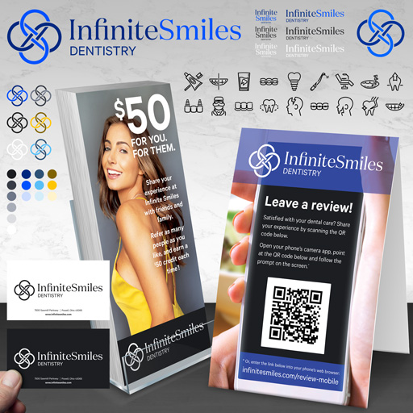
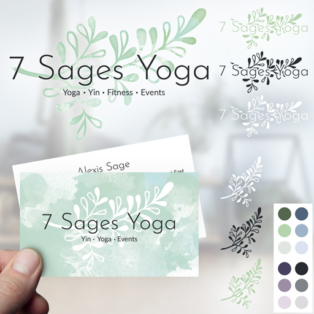
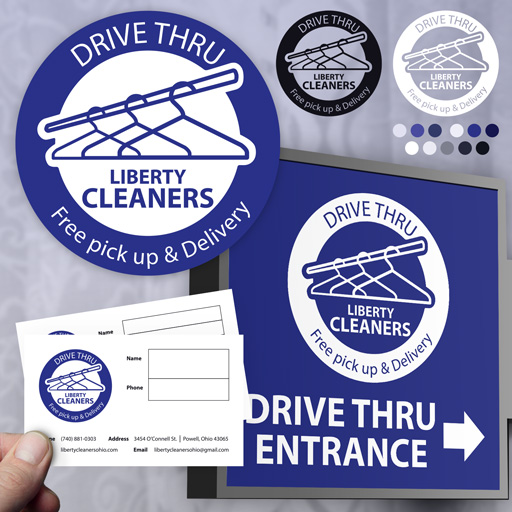
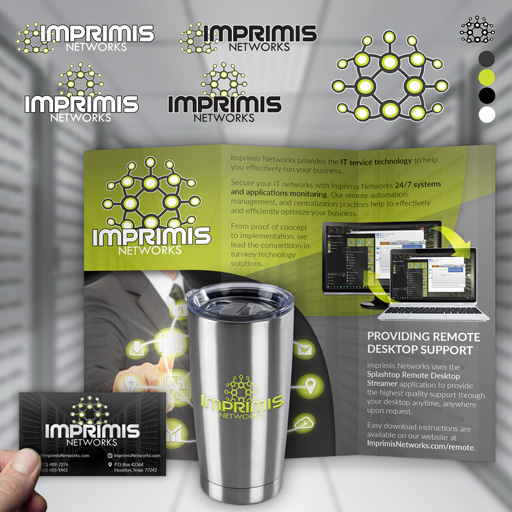

---
layout: default
title: "Brand design"
subtitle: "The online portfolio containing brand design work for Product Designer Kate Durr"
categories: Kate Durr, Portfolio, Collection, Works, Brand Design
--- 

<!-- Start Body wrapper -->
<div class="wrapper-body body-padding">
  <div class="col-md-12">

     <!-- Start margin -->
     <div class="margin-collection wow fadeIn" data-wow-delay="0.1s">
         <div class="col-md-12">
           <h3 class="heading-inner">Brand design</h3>
              <div class="hr"></div>
               <div class="heading-c">
                I specialize in helping passionate people bring their brands to life. I turn unclear concepts into concrete products and repair and update existing brands. Simply, a clear brand identity converts and builds a trusting relationship with customers. Are you interested in establishing your own brand? <a href="contact.html">Contact me!</a></div>
         </div>
         <!-- End text -->
         

          <!-- Start projects -->
          <div class="col-sm-12">
            <div class="row">

              <!-- portfolio-item -->
              <div class="col-xs-4 grid thumbs">
                <figure class="effect-moses wow fadeIn" data-wow-delay="0.1s">
                  <a href="img/brand/infinite-smiles-brand.gif">
                  
                    <figcaption>
                      <h2>Infinite Smiles brand set</h2>
                      <p>Brand materials for a boutique dentist</p>
                    </figcaption>                  
                  </a>
                </figure>
              </div>

              <!-- portfolio-item -->
              <div class="col-xs-4 grid thumbs">
                <figure class="effect-moses wow fadeIn" data-wow-delay="0.1s">
                  <a href="img/brand/7-sages-yoga-brand.gif">
                  
                    <figcaption>
                      <h2>7 Sages Yoga brand set</h2>
                      <p>Brand set for a small, local yoga studio</p>
                    </figcaption>                  
                  </a>
                </figure>
              </div>

              <!-- portfolio-item -->
              <div class="col-xs-4 grid thumbs">
                <figure class="effect-moses wow fadeIn" data-wow-delay="0.1s">
                  <a href="img/brand/liberty-cleaners-brand.gif">
                  
                    <figcaption>
                      <h2>Liberty Cleaners brand set</h2>
                      <p>Brand materials for a local dry cleaner</p>
                    </figcaption>                  
                  </a>
                </figure>
              </div>

              <!-- portfolio-item -->
              <div class="col-xs-4 grid thumbs">
                <figure class="effect-moses wow fadeIn" data-wow-delay="0.1s">
                  <a href="img/brand/imprimis-networks-brand.gif">
                  
                    <figcaption>
                      <h2>Imprimis Networks brand set</h2>
                      <p>A set of brand materials for an IT company</p>
                    </figcaption>                  
                  </a>
                </figure>
              </div>
            
            </div><!-- End row -->
          </div>
          <!-- End portfolio feature -->
   
         <!-- Breadcrumbs -->
         <div class="col-sm-12">
           <h3 class="subheading-inner">View other work</h3>
               <div class="crumb">
                <a href="web.html" class="horizontal-list">Web</a> | <a href="print.html" class="horizontal-list">Print</a> | <a href="game.html" class="horizontal-list">Game</a></div>
         </div>
         <!-- End breadcrumbs -->

      </div>
      <!-- End margin -->

  </div>
  <!-- End col-md-12 -->

</div>
<!-- End Body wrapper -->